Introducción al Control por Computador
Informática Industrial y Comunicaciones
Ingeniería de Sistemas y Automática — Universidad de Oviedo

Índice de Contenidos
- El Control de Procesos por Computador: Proceso, entradas y salidas
- Variables del lazo de control y operación en tiempo real
- Elementos de un equipo de control (Sensores, Actuadores y HMI)
- Arquitecturas de computadores empleados en control
- Niveles de Control: Control secuencial vs. Lazo de regulación
- Ejemplo integrado: Sistema de transporte y posicionamiento
El Control de Procesos
Un sistema o proceso es un conjunto de elementos físicos que cumplen un cometido común:
- Salidas: Variables medibles del sistema cuyo comportamiento se desea controlar (ej. temperatura, velocidad, posición).
- Entradas: Acciones que se pueden realizar sobre el sistema para modificar el valor de las salidas.
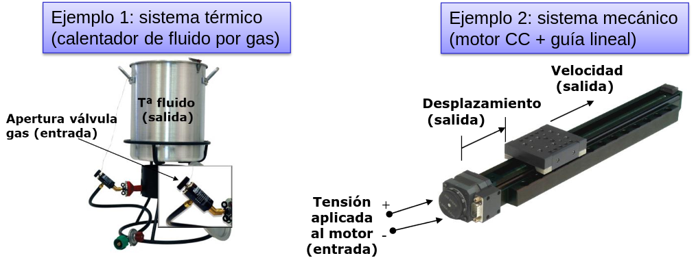
Variables del Lazo de Control
En un lazo de control cerrado, el computador opera en tiempo real calculando dinámicamente las siguientes variables:
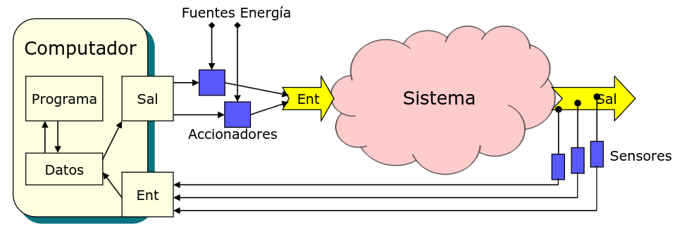
Elementos de un equipo de control
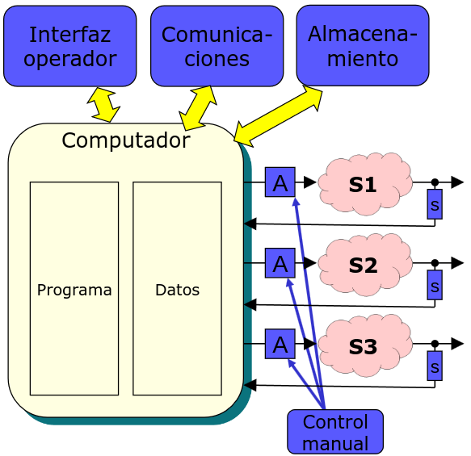
-
Computador:
- El "cerebro" del control.
- Programa y datos alojados en memoria.
-
Sensores:
- Dan al computador información del estado de los sistemas, midiendo sus salidas.
-
Accionadores:
- Permiten al computador generar cambios sobre los sistemas, modulando la energía entregada por fuentes externas.
-
Interfaz operador:
- Panel(es) que permite(n) al humano intervenir en el control, generando órdenes y recibiendo información.
-
Comunicaciones:
- Interconexión con otros computadores para intercambio de información y comandos.
-
Almacenamiento:
- De configuraciones y resultados.
-
Control manual:
- Reemplaza las salidas del computador en caso de error o alarma.
Computadores para control
El computador es capaz de:
- Aceptar información digital procedente del exterior a través de sus entradas.
- Almacenar la información (datos) en su memoria (variables).
- Procesar los datos de acuerdo a un programa (secuencia de instrucciones sencillas) instalado en su memoria.
- Generar comandos hacia el exterior a través de sus salidas.
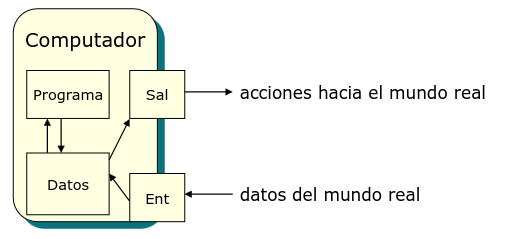
Sensores
▫ Convierten magnitudes físicas en valores de pequeña tensión/corriente.
▫ Clasificaciones:
- De posición (lineal/angular)
- De velocidad (lineal/angular)
- De temperatura
- De presión
- De presencia
- ...
- Analógicos
- Digitales todo/nada
- De tren de pulsos
- Numéricos
▫ Para obtener el valor medido:
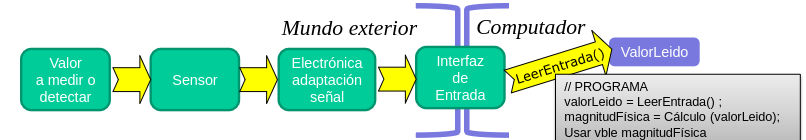
Accionadores
▫ Permiten el comando del sistema mediante la energía procedente de una fuente externa, modulada por un valor de pequeña tensión/corriente.
▫ Clasificaciones:
- Eléctricos
- Neumáticos
- Hidráulicos
- ...
- Desplazamiento
- Giro
- Calentamiento
- Compresión
- ...
- Analógicos
- Digitales todo/nada
- PWM
- Numéricos
▫ Para entregar la energía deseada:
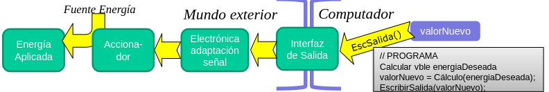
Interfaz con el operador
- Indicador luminoso (LED)
- Display (7 segmentos, LCD,...)
- Pantalla (texto/gráficos)
- Impresora
- ...
- Botón / pulsador
- Selector rotativo
- Teclado
- Ratón / Puntero / Joystick
- ...
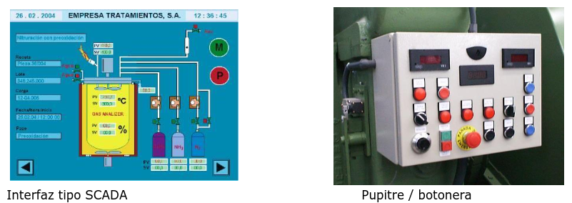
Comunicaciones
Enlace exclusivo y dedicado para la transferencia de datos entre dos únicos dispositivos.
- Serie (RS-232, USB)
- Paralelo
- Inalámbrica (Bluetooth)
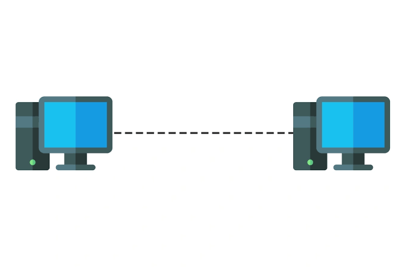
Canal compartido que permite interconectar y comunicar múltiples nodos o equipos simultáneamente.
- Serie (I2C, CAN, RS-485)
- Red (Ethernet)
- Inalámbrica (Wifi)
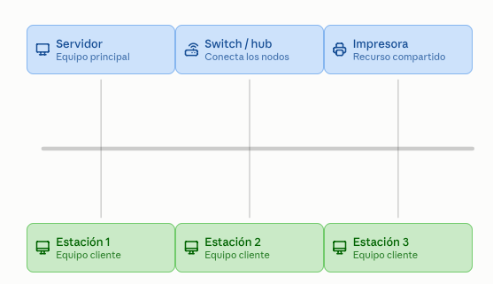
Niveles de control
Control secuencial:
- Genera la secuencia de acontecimientos deseada.
- Determina los valores deseados (consignas) de las variables a controlar.
- Diagrama de estados / transiciones.
-
Cambio de estados por:
- Tiempo máximo
- Combinación de valores de entradas u otras variables
- Acciones del operador o de otros computadores
Lazo de control:
-
Asegura que las variables a controlar alcancen el valor de sus consignas con precisión y velocidad.
- Obtiene medida de la variable a controlar.
- Calcula error = consigna - variable a controlar.
- Modifica la acción de control para que el error tienda a cero.
Ejemplo Integrado: Carretilla Industrial
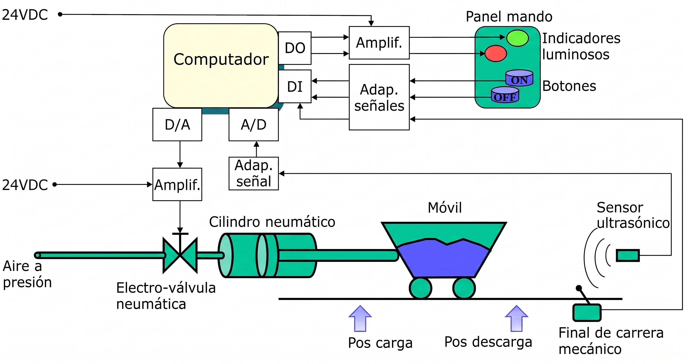
Niveles de control
-
Cuando se pulsa el botón ON, la carretilla debe repetir el ciclo siguiente:
- Moverse a la posición de carga
- Permanecer 5 seg
- Moverse a la posición de descarga
- Permanecer 2 seg
- Si se alcanza el final de carrera mecánico, activar alarma y detener ciclo.
- Si el operador pulsa el botón OFF, terminar último ciclo y no repetir.
Niveles de control
- Cuando ordena el movimiento de la carretilla a una posición, se debe alcanzar la misma con la precisión y velocidad requeridas.
-
Repetir hasta llegar al destino (consigna):
- Leer posición actual del sensor ultrasónico.
- error = consigna − posición actual
- Calcular aire a inyectar para reducir error a cero.
- Abrir electro-válvula para inyectar el aire deseado.
Conceptos básicos para programación de control
Variables continuas y discretas
- En el mundo real, las variables son continuas y analógicas.
- En el computador, las variables son discretas y digitales.
- Se representa una señal analógica como x(t).
- Se representa una secuencia de valores discretos como {xk}.
- En el computador sólo se dispone de valores discretos, obtenidos en instantes separados Tm (periodo de muestreo).
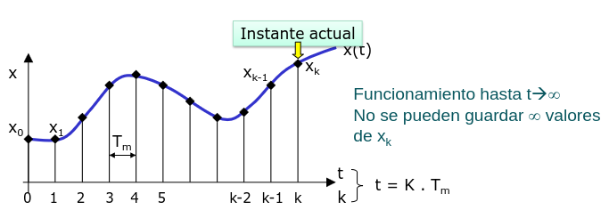
Variables temporales discretas
▫ En el mundo real, el tiempo avanza...
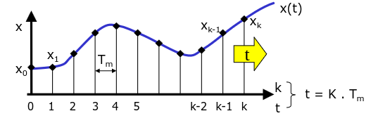
▫ Un instante Tm después:
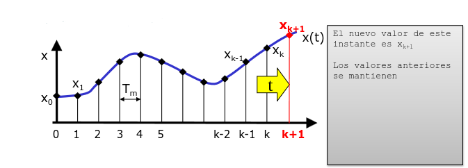
Variables temporales discretas
▫ Desde el punto de vista del programa de control, consideramos siempre el momento actual como el instante k, el tiempo pasa bajo él…
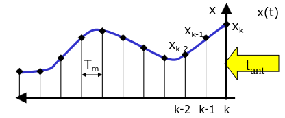
▫ Un instante Tm después:
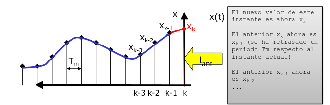
Programa básico de control
▫ Un programa básico de control tendrá el aspecto siguiente:
#include ...
int main()
{
// Declaración de variables necesarias, al menos:
float ref_k; // Valor de la consigna actual (instante k)
float y_k; // Valor de la salida actual
float u_k; // Valor de la acción de control a aplicar
// Inicializaciones necesarias
...
// Bucle de control
while (1)
{
ref_k = ValorDeLaReferencia(); // De operador, cálculo, medida, etc.
y_k = ValorDeLaSalida(); // Medida mediante sensor
u_k = CalculoAccionDeControl(y_k, ref_k); // Según algoritmo deseado
AplicarAccionDeControl(u_k); // Enviar a accionador
Sleep(Tm); // No ejecutar código hasta el siguiente Tm
}
}
Programa básico de control
▫ Si el programa necesita manejar valores actuales y anteriores de una señal (ejemplo, acción de control depende de crecimiento de yk : necesita yk e yk-1)
#include ...
int main()
{
float ref_k;
float y_k, y_k_menos_1; // Valor de la salida actual y la anterior
float u_k;
// Inicializaciones necesarias
...
// Bucle de control
while (1)
{
y_k_menos_1 = y_k; // La última yk (del instante anterior) es ahora yk-1
ref_k = ValorDeLaReferencia();
y_k = ValorDeLaSalida();
u_k = CalculoAccionDeControl(y_k, y_k_menos_1, ref_k);
AplicarAccionDeControl(u_k);
Sleep(Tm);
}
}
Programa básico de control
▫ Generalizando: el programa necesita el valor actual y 'm' anteriores de la señal v (vk, vk-1,..., vk-m)
#include ...
#define M 6
int main()
{
float v_k[M+1]; // Desde 0 a m incluido
// Inicializaciones
...
// Bucle de control
while (1)
{
v_k[M] = v_k[M-1];
v_k[M-1] = v_k[M-2];
...
v_k[2] = v_k[1];
v_k[1] = v_k[0]; // Mejor función: Desplaza(v_k, M+1);
v_k[0] = nuevo_valor();
// Usar tabla v_k con la interpretación
Sleep(Tm);
}
}
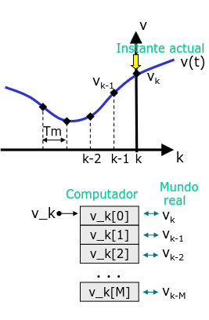
Programa básico de control
▫ Un ejemplo de la vida cotidiana: regar una planta. Cada día comprobamos si tenemos que regar nuestra planta, utilizando la información de lo que ha llovido en la semana previa:
- Periodo de muestreo: 1 día
- Número de datos a "recordar": 1 semana
▪ Cada día:
- Toda la información acumulada es 1 día más vieja.
- Se añade la información del día actual (lluvia medida).
- Se toma una decisión sobre el riego del día actual con la información disponible (día actual y 6 anteriores).
- Se espera 1 día para repetir la operación.